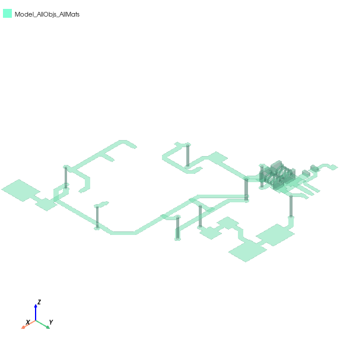
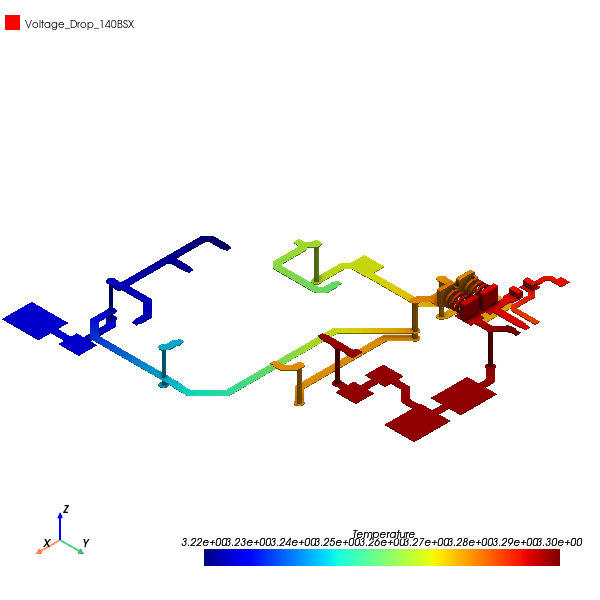

Download this example
Download this example as a Jupyter Notebook or as a Python script.
PCB DCIR analysis#
This example shows how to use PyAEDT to create a design in Q3D Extractor and run a DC IR drop simulation starting from an EDB project.
Keywords: Q3D, layout, DCIR.
Perform imports and define constants#
Perform required imports.
[1]:
import os
import tempfile
import time
[2]:
import ansys.aedt.core
import pyedb
Define constants.
[3]:
AEDT_VERSION = "2024.2"
NUM_CORES = 4
NG_MODE = False
Create temporary directory#
Create a temporary directory where downloaded data or dumped data can be stored. If you’d like to retrieve the project data for subsequent use, the temporary folder name is given by temp_folder.name.
[4]:
temp_folder = tempfile.TemporaryDirectory(suffix=".ansys")
# ## Set up project files and path
#
# Download needed project file and set up temporary project directory.
[5]:
aedb_project = ansys.aedt.core.downloads.download_file(
"edb/ANSYS-HSD_V1.aedb", destination=temp_folder.name
)
coil = ansys.aedt.core.downloads.download_file(
source="inductance_3d_component",
name="air_coil.a3dcomp",
destination=temp_folder.name,
)
res = ansys.aedt.core.downloads.download_file(
source="resistors", name="Res_0402.a3dcomp", destination=temp_folder.name
)
project_name = "HSD"
output_edb = os.path.join(temp_folder.name, project_name + ".aedb")
output_q3d = os.path.join(temp_folder.name, project_name + "_q3d.aedt")
Open EDB project#
Open the EDB project and create a cutout on the selected nets before exporting to Q3D.
[6]:
edb = pyedb.Edb(aedb_project, edbversion=AEDT_VERSION)
signal_nets = ["1.2V_AVDLL_PLL", "1.2V_AVDDL", "1.2V_DVDDL", "NetR106_1"]
ground_nets = ["GND"]
cutout_points = edb.cutout(
signal_list=signal_nets,
reference_list=ground_nets,
output_aedb_path=output_edb,
)
PyAEDT INFO: Logger is initialized in EDB.
PyAEDT INFO: legacy v0.37.0
PyAEDT INFO: Python version 3.10.11 (tags/v3.10.11:7d4cc5a, Apr 5 2023, 00:38:17) [MSC v.1929 64 bit (AMD64)]
PyAEDT INFO: Database ANSYS-HSD_V1.aedb Opened in 2024.2
PyAEDT INFO: Cell main Opened
PyAEDT INFO: Builder was initialized.
PyAEDT INFO: EDB initialized.
PyAEDT INFO: EDB file save time: 15.62ms
PyAEDT INFO: Cutout Multithread started.
PyAEDT INFO: Net clean up Elapsed time: 0m 2sec
PyAEDT INFO: Extent Creation Elapsed time: 0m 0sec
PyAEDT INFO: 1988 Padstack Instances deleted. Elapsed time: 0m 1sec
PyAEDT INFO: 441 Primitives deleted. Elapsed time: 0m 3sec
PyAEDT INFO: 972 components deleted
PyAEDT INFO: EDB file save time: 15.63ms
PyAEDT INFO: Cutout completed. Elapsed time: 0m 6sec
Identify pin positions#
Identify [x,y] pin locations on the components to define where to assign sources and sinks for Q3D.
[7]:
pin_u11_scl = [
i for i in edb.components["U11"].pins.values() if i.net_name == "1.2V_AVDLL_PLL"
]
pin_u9_1 = [i for i in edb.components["U9"].pins.values() if i.net_name == "1.2V_AVDDL"]
pin_u9_2 = [i for i in edb.components["U9"].pins.values() if i.net_name == "1.2V_DVDDL"]
pin_u11_r106 = [
i for i in edb.components["U11"].pins.values() if i.net_name == "NetR106_1"
]
Append Z Positions#
Compute the Q3D 3D position. The units in EDB are meters so the factor 1000 converts from meters to millimeters.
[8]:
location_u11_scl = [i * 1000 for i in pin_u11_scl[0].position]
location_u11_scl.append(edb.components["U11"].upper_elevation * 1000)
location_u9_1_scl = [i * 1000 for i in pin_u9_1[0].position]
location_u9_1_scl.append(edb.components["U9"].upper_elevation * 1000)
location_u9_2_scl = [i * 1000 for i in pin_u9_2[0].position]
location_u9_2_scl.append(edb.components["U9"].upper_elevation * 1000)
location_u11_r106 = [i * 1000 for i in pin_u11_r106[0].position]
location_u11_r106.append(edb.components["U11"].upper_elevation * 1000)
Identify pin positions for 3D components#
Identify the pin positions where 3D components of passives are to be added.
[9]:
location_l2_1 = [i * 1000 for i in edb.components["L2"].pins["1"].position]
location_l2_1.append(edb.components["L2"].upper_elevation * 1000)
location_l4_1 = [i * 1000 for i in edb.components["L4"].pins["1"].position]
location_l4_1.append(edb.components["L4"].upper_elevation * 1000)
location_r106_1 = [i * 1000 for i in edb.components["R106"].pins["1"].position]
location_r106_1.append(edb.components["R106"].upper_elevation * 1000)
Save and close EDB#
Save and close EDB. Then, open EDT in HFSS 3D Layout to generate the 3D model.
[10]:
edb.save_edb()
edb.close_edb()
time.sleep(3)
h3d = ansys.aedt.core.Hfss3dLayout(
output_edb, version=AEDT_VERSION, non_graphical=NG_MODE, new_desktop=True
)
PyAEDT INFO: EDB file save time: 0.00ms
PyAEDT INFO: EDB file release time: 15.63ms
PyAEDT INFO: Python version 3.10.11 (tags/v3.10.11:7d4cc5a, Apr 5 2023, 00:38:17) [MSC v.1929 64 bit (AMD64)].
PyAEDT INFO: PyAEDT version 0.15.dev0.
PyAEDT INFO: Initializing new Desktop session.
PyAEDT INFO: Log on console is enabled.
PyAEDT INFO: Log on file C:\Users\ansys\AppData\Local\Temp\pyaedt_ansys_c792ddfe-4660-4b71-bb91-9a258aa154a6.log is enabled.
PyAEDT INFO: Log on AEDT is enabled.
PyAEDT INFO: Debug logger is disabled. PyAEDT methods will not be logged.
PyAEDT INFO: Launching PyAEDT with gRPC plugin.
PyAEDT INFO: New AEDT session is starting on gRPC port 60962.
PyAEDT WARNING: Electronics Desktop license not found on the default license server.
PyAEDT INFO: Electronics Desktop started on gRPC port: 60962 after 1.5495331287384033 seconds.
PyAEDT INFO: AEDT installation Path C:\Program Files\AnsysEM\v242\Win64
PyAEDT INFO: Ansoft.ElectronicsDesktop.2024.2 version started with process ID 11528.
PyAEDT INFO: EDB folder C:\Users\ansys\AppData\Local\Temp\tmplslfyy5y.ansys\HSD.aedb has been imported to project HSD
PyAEDT INFO: Active Design set to 0;main
PyAEDT INFO: Active Design set to 0;main
PyAEDT INFO: Aedt Objects correctly read
Export to Q3D#
Create a dummy setup and export the layout to Q3D. The keep_net_name parameter reassigns Q3D net names from HFSS 3D Layout.
[11]:
setup = h3d.create_setup()
setup.export_to_q3d(output_q3d, keep_net_name=True)
h3d.close_project()
time.sleep(3)
PyAEDT INFO: Project: HSD, Design: main, [info] Translation Info: Export complete (00:00:05). (05:24:45 AM Feb 24, 2025)
PyAEDT INFO: Project: HSD, Design: main, [info] File written to C:/Users/ansys/AppData/Local/Temp/tmplslfyy5y.ansys/HSD_q3d.aedt. (05:24:45 AM Feb 24, 2025)
PyAEDT INFO: Loading Modeler.
PyAEDT INFO: Modeler loaded.
PyAEDT INFO: EDB loaded.
PyAEDT INFO: Layers loaded.
PyAEDT INFO: Primitives loaded.
PyAEDT INFO: Modeler class has been initialized! Elapsed time: 0m 0sec
PyAEDT INFO: Logger is initialized in EDB.
PyAEDT INFO: legacy v0.37.0
PyAEDT INFO: Python version 3.10.11 (tags/v3.10.11:7d4cc5a, Apr 5 2023, 00:38:17) [MSC v.1929 64 bit (AMD64)]
PyAEDT INFO: Database HSD.aedb Opened in 2024.2
PyAEDT INFO: Cell main Opened
PyAEDT INFO: Builder was initialized.
PyAEDT INFO: EDB initialized.
PyAEDT INFO: Processing net NetR106_1...
PyAEDT INFO: Processing net GND...
PyAEDT INFO: Processing net 1.2V_DVDDL...
PyAEDT INFO: Processing net 1.2V_AVDLL_PLL...
PyAEDT INFO: Processing net 1.2V_AVDDL...
PyAEDT INFO: Net processing completed.
PyAEDT INFO: Processing vias...
PyAEDT INFO: Vias processing completed.
PyAEDT INFO: Parsing C:\Users\ansys\AppData\Local\Temp\tmplslfyy5y.ansys\HSD_q3d.aedt.
PyAEDT INFO: Python version 3.10.11 (tags/v3.10.11:7d4cc5a, Apr 5 2023, 00:38:17) [MSC v.1929 64 bit (AMD64)].
PyAEDT INFO: PyAEDT version 0.15.dev0.
PyAEDT INFO: Returning found Desktop session with PID 11528!
PyAEDT INFO: File C:\Users\ansys\AppData\Local\Temp\tmplslfyy5y.ansys\HSD_q3d.aedt correctly loaded. Elapsed time: 0m 3sec
PyAEDT INFO: Project HSD_q3d has been opened.
PyAEDT INFO: Active Design set to Q3DDesign1
PyAEDT INFO: Active Design set to Q3DDesign1
PyAEDT INFO: Aedt Objects correctly read
PyAEDT INFO: Modeler class has been initialized! Elapsed time: 0m 1sec
PyAEDT INFO: Materials class has been initialized! Elapsed time: 0m 0sec
PyAEDT INFO: Renaming primitives for net NetR106_1...
PyAEDT INFO: Renaming primitives for net GND...
PyAEDT INFO: Parsing design objects. This operation can take time
PyAEDT INFO: Refreshing bodies from Object Info
PyAEDT INFO: Bodies Info Refreshed Elapsed time: 0m 0sec
PyAEDT INFO: 3D Modeler objects parsed. Elapsed time: 0m 0sec
PyAEDT INFO: Union of 51 objects has been executed.
PyAEDT INFO: Renaming primitives for net 1_2V_DVDDL...
PyAEDT INFO: Parsing design objects. This operation can take time
PyAEDT INFO: Refreshing bodies from Object Info
PyAEDT INFO: Bodies Info Refreshed Elapsed time: 0m 0sec
PyAEDT INFO: 3D Modeler objects parsed. Elapsed time: 0m 0sec
PyAEDT INFO: Union of 12 objects has been executed.
PyAEDT INFO: Renaming primitives for net 1_2V_AVDLL_PLL...
PyAEDT INFO: Parsing design objects. This operation can take time
PyAEDT INFO: Refreshing bodies from Object Info
PyAEDT INFO: Bodies Info Refreshed Elapsed time: 0m 0sec
PyAEDT INFO: 3D Modeler objects parsed. Elapsed time: 0m 0sec
PyAEDT INFO: Union of 5 objects has been executed.
PyAEDT INFO: Renaming primitives for net 1_2V_AVDDL...
PyAEDT INFO: Parsing design objects. This operation can take time
PyAEDT INFO: Refreshing bodies from Object Info
PyAEDT INFO: Bodies Info Refreshed Elapsed time: 0m 0sec
PyAEDT INFO: 3D Modeler objects parsed. Elapsed time: 0m 0sec
PyAEDT INFO: Union of 5 objects has been executed.
PyAEDT INFO: 1 Nets have been identified: GND_1
PyAEDT INFO: Closing the AEDT Project HSD_q3d
PyAEDT INFO: Project HSD_q3d closed correctly
PyAEDT INFO: EDB file release time: 0.00ms
PyAEDT INFO: Closing the AEDT Project HSD
PyAEDT INFO: Project HSD closed correctly
Open Q3D#
Launch the newly created Q3D project.
[12]:
q3d = ansys.aedt.core.Q3d(output_q3d, version=AEDT_VERSION)
q3d.modeler.delete("GND")
q3d.modeler.delete("16_Bottom_L6")
q3d.delete_all_nets()
PyAEDT INFO: Parsing C:\Users\ansys\AppData\Local\Temp\tmplslfyy5y.ansys\HSD_q3d.aedt.
PyAEDT INFO: Python version 3.10.11 (tags/v3.10.11:7d4cc5a, Apr 5 2023, 00:38:17) [MSC v.1929 64 bit (AMD64)].
PyAEDT INFO: PyAEDT version 0.15.dev0.
PyAEDT INFO: Returning found Desktop session with PID 11528!
PyAEDT INFO: Project HSD_q3d has been opened.
PyAEDT INFO: File C:\Users\ansys\AppData\Local\Temp\tmplslfyy5y.ansys\HSD_q3d.aedt correctly loaded. Elapsed time: 0m 8sec
PyAEDT INFO: Active Design set to Q3DDesign1
PyAEDT INFO: Active Design set to Q3DDesign1
PyAEDT INFO: Aedt Objects correctly read
PyAEDT INFO: Modeler class has been initialized! Elapsed time: 0m 0sec
PyAEDT INFO: Parsing design objects. This operation can take time
PyAEDT INFO: Refreshing bodies from Object Info
PyAEDT INFO: Bodies Info Refreshed Elapsed time: 0m 0sec
PyAEDT INFO: 3D Modeler objects parsed. Elapsed time: 0m 0sec
PyAEDT INFO: Deleted 1 Objects: GND.
PyAEDT INFO: Parsing design objects. This operation can take time
PyAEDT INFO: Refreshing bodies from Object Info
PyAEDT INFO: Bodies Info Refreshed Elapsed time: 0m 0sec
PyAEDT INFO: 3D Modeler objects parsed. Elapsed time: 0m 0sec
PyAEDT INFO: Deleted 1 Objects: 16_Bottom_L6.
[12]:
True
Insert inductors#
Create coordinate systems and place 3D component inductors.
[13]:
q3d.modeler.create_coordinate_system(location_l2_1, name="L2")
comp = q3d.modeler.insert_3d_component(coil, coordinate_system="L2")
comp.rotate(q3d.AXIS.Z, -90)
comp.parameters["n_turns"] = "3"
comp.parameters["d_wire"] = "100um"
q3d.modeler.set_working_coordinate_system("Global")
q3d.modeler.create_coordinate_system(location_l4_1, name="L4")
comp2 = q3d.modeler.insert_3d_component(coil, coordinate_system="L4")
comp2.rotate(q3d.AXIS.Z, -90)
comp2.parameters["n_turns"] = "3"
comp2.parameters["d_wire"] = "100um"
q3d.modeler.set_working_coordinate_system("Global")
q3d.modeler.set_working_coordinate_system("Global")
q3d.modeler.create_coordinate_system(location_r106_1, name="R106")
comp3 = q3d.modeler.insert_3d_component(
res, geometry_parameters={"$Resistance": 2000}, coordinate_system="R106"
)
comp3.rotate(q3d.AXIS.Z, -90)
q3d.modeler.set_working_coordinate_system("Global")
[13]:
True
Delete dielectrics#
Delete all dielectric objects since they are not needed in DC analysis.
[14]:
q3d.modeler.delete(q3d.modeler.get_objects_by_material("Megtron4"))
q3d.modeler.delete(q3d.modeler.get_objects_by_material("Megtron4_2"))
q3d.modeler.delete(q3d.modeler.get_objects_by_material("Megtron4_3"))
q3d.modeler.delete(q3d.modeler.get_objects_by_material("Solder Resist"))
objs_copper = q3d.modeler.get_objects_by_material("copper")
objs_copper_names = [i.name for i in objs_copper]
q3d.plot(
show=False,
assignment=objs_copper_names,
plot_as_separate_objects=False,
output_file=os.path.join(temp_folder.name, "Q3D.jpg"),
plot_air_objects=False,
)
PyAEDT INFO: Parsing design objects. This operation can take time
PyAEDT INFO: Refreshing bodies from Object Info
PyAEDT INFO: Bodies Info Refreshed Elapsed time: 0m 0sec
PyAEDT INFO: 3D Modeler objects parsed. Elapsed time: 0m 0sec
PyAEDT INFO: Deleted 4 Objects: DE1,DE3,DE5,DE7.
PyAEDT INFO: Parsing design objects. This operation can take time
PyAEDT INFO: Refreshing bodies from Object Info
PyAEDT INFO: Bodies Info Refreshed Elapsed time: 0m 0sec
PyAEDT INFO: 3D Modeler objects parsed. Elapsed time: 0m 0sec
PyAEDT INFO: Deleted 6 Objects: DE2,DE6,Inner1_GND1_t_fill,Inner2_PWR1_t_fill,Inner5_PWR2_t_fill,Inner6_GND2_t_fill.
PyAEDT INFO: Parsing design objects. This operation can take time
PyAEDT INFO: Refreshing bodies from Object Info
PyAEDT INFO: Bodies Info Refreshed Elapsed time: 0m 0sec
PyAEDT INFO: 3D Modeler objects parsed. Elapsed time: 0m 0sec
PyAEDT INFO: Deleted 3 Objects: Inner3_Sig1_t_fill,Inner4_Sig2_t_fill,Megtron4_1mm.
PyAEDT INFO: Parsing design objects. This operation can take time
PyAEDT INFO: Refreshing bodies from Object Info
PyAEDT INFO: Bodies Info Refreshed Elapsed time: 0m 0sec
PyAEDT INFO: 3D Modeler objects parsed. Elapsed time: 0m 0sec
PyAEDT INFO: Deleted 2 Objects: 16_Bottom_t_fill,1_Top_t_fill.
PyAEDT INFO: PostProcessor class has been initialized! Elapsed time: 0m 0sec
PyAEDT INFO: Post class has been initialized! Elapsed time: 0m 0sec
C:\actions-runner\_work\pyaedt-examples\pyaedt-examples\.venv\lib\site-packages\pyvista\jupyter\notebook.py:37: UserWarning: Failed to use notebook backend:
No module named 'trame'
Falling back to a static output.
warnings.warn(

[14]:
<ansys.aedt.core.visualization.plot.pyvista.ModelPlotter at 0x223e9616530>
Assign source and sink#
Use previously calculated positions to identify faces. Select the net 1_Top and assign sources and sinks on nets.
[15]:
sink_f = q3d.modeler.create_circle(q3d.PLANE.XY, location_u11_scl, 0.1)
source_f1 = q3d.modeler.create_circle(q3d.PLANE.XY, location_u9_1_scl, 0.1)
source_f2 = q3d.modeler.create_circle(q3d.PLANE.XY, location_u9_2_scl, 0.1)
source_f3 = q3d.modeler.create_circle(q3d.PLANE.XY, location_u11_r106, 0.1)
sources_objs = [source_f1, source_f2, source_f3]
q3d.auto_identify_nets()
identified_net = q3d.nets[0]
q3d.sink(sink_f, net_name=identified_net)
source1 = q3d.source(source_f1, net_name=identified_net)
source2 = q3d.source(source_f2, net_name=identified_net)
source3 = q3d.source(source_f3, net_name=identified_net)
sources_bounds = [source1, source2, source3]
q3d.edit_sources(
dcrl={
"{}:{}".format(source1.props["Net"], source1.name): "-1.0A",
"{}:{}".format(source2.props["Net"], source2.name): "-1.0A",
"{}:{}".format(source2.props["Net"], source3.name): "-1.0A",
}
)
PyAEDT INFO: Materials class has been initialized! Elapsed time: 0m 0sec
PyAEDT INFO: 1 Nets have been identified: 1_2V_AVDDL
PyAEDT INFO: Boundary Sink Sink_QM5W2A has been created.
PyAEDT INFO: Boundary Source Source_3ARUOK has been created.
PyAEDT INFO: Boundary Source Source_6TTLAZ has been created.
PyAEDT INFO: Boundary Source Source_Y46SFW has been created.
[15]:
True
Create setup#
Create a setup and a frequency sweep from DC to 2GHz. Then, analyze the project.
[16]:
setup = q3d.create_setup()
setup.dc_enabled = True
setup.capacitance_enabled = False
setup.ac_rl_enabled = False
setup.props["SaveFields"] = True
setup.props["DC"]["Cond"]["MaxPass"] = 3
setup.analyze()
PyAEDT INFO: Key Desktop/ActiveDSOConfigurations/Q3D Extractor correctly changed.
PyAEDT INFO: Solving design setup MySetupAuto
PyAEDT INFO: Key Desktop/ActiveDSOConfigurations/Q3D Extractor correctly changed.
PyAEDT INFO: Design setup MySetupAuto solved correctly in 0.0h 3.0m 43.0s
Solve setup#
[17]:
q3d.save_project()
q3d.analyze_setup(setup.name, cores=NUM_CORES)
PyAEDT INFO: Project HSD_q3d Saved correctly
PyAEDT INFO: Key Desktop/ActiveDSOConfigurations/Q3D Extractor correctly changed.
PyAEDT INFO: Solving design setup MySetupAuto
PyAEDT INFO: Key Desktop/ActiveDSOConfigurations/Q3D Extractor correctly changed.
PyAEDT INFO: Design setup MySetupAuto solved correctly in 0.0h 0.0m 49.0s
[17]:
True
Create a named expression#
Use PyAEDT advanced fields calculator to add from the expressions catalog the voltage drop.
[18]:
voltage_drop = q3d.post.fields_calculator.add_expression("voltage_drop", None)
Create Phi plot#
Compute ACL solutions and plot them.
[19]:
plot1 = q3d.post.create_fieldplot_surface(
q3d.modeler.get_objects_by_material("copper"),
quantity=voltage_drop,
intrinsics={"Freq": "1GHz"},
)
q3d.post.plot_field_from_fieldplot(
plot1.name,
project_path=temp_folder.name,
mesh_plot=False,
image_format="jpg",
view="isometric",
show=False,
plot_cad_objs=False,
log_scale=False,
)
PyAEDT INFO: Active Design set to Q3DDesign1
C:\actions-runner\_work\pyaedt-examples\pyaedt-examples\.venv\lib\site-packages\pyvista\jupyter\notebook.py:37: UserWarning: Failed to use notebook backend:
No module named 'trame'
Falling back to a static output.
warnings.warn(

[19]:
<ansys.aedt.core.visualization.plot.pyvista.ModelPlotter at 0x223e9798fd0>
Compute voltage on source circles#
Use PyAEDT advanced field calculator to compute the voltage on source circles and get the value using the get_solution_data() method.
[20]:
v_surface = {
"name": "",
"description": "Maximum value of voltage on a surface",
"design_type": ["Q3D Extractor"],
"fields_type": ["DC R/L Fields"],
"primary_sweep": "Freq",
"assignment": "",
"assignment_type": ["Face", "Sheet"],
"operations": [
f"NameOfExpression({voltage_drop})",
"EnterSurface('assignment')",
"Operation('SurfaceValue')",
"Operation('Maximum')",
],
"report": ["Field_3D"],
}
for source_circle, source_bound in zip(sources_objs, sources_bounds):
v_surface["name"] = "V{}".format(source_bound.name)
q3d.post.fields_calculator.add_expression(v_surface, source_circle.name)
data = q3d.post.get_solution_data(
"V{}".format(source_bound.name),
q3d.nominal_adaptive,
variations={"Freq": "1GHz"},
report_category="DC R/L Fields",
)
if data:
print(data.data_real("V{}".format(source_bound.name)))
PyAEDT INFO: Solution Data Correctly Loaded.
[3.2604900220160293]
PyAEDT INFO: Solution Data Correctly Loaded.
[3.2604900220160293]
PyAEDT INFO: Solution Data Correctly Loaded.
[3.2604900220160293]
Release AEDT#
[21]:
q3d.save_project()
q3d.release_desktop()
# Wait 3 seconds to allow AEDT to shut down before cleaning the temporary directory.
time.sleep(3)
PyAEDT INFO: Project HSD_q3d Saved correctly
PyAEDT INFO: Desktop has been released and closed.
Clean up#
All project files are saved in the folder temp_folder.name. If you’ve run this example as a Jupyter notebook, you can retrieve those project files. The following cell removes all temporary files, including the project folder.
[22]:
temp_folder.cleanup()
Download this example
Download this example as a Jupyter Notebook or as a Python script.